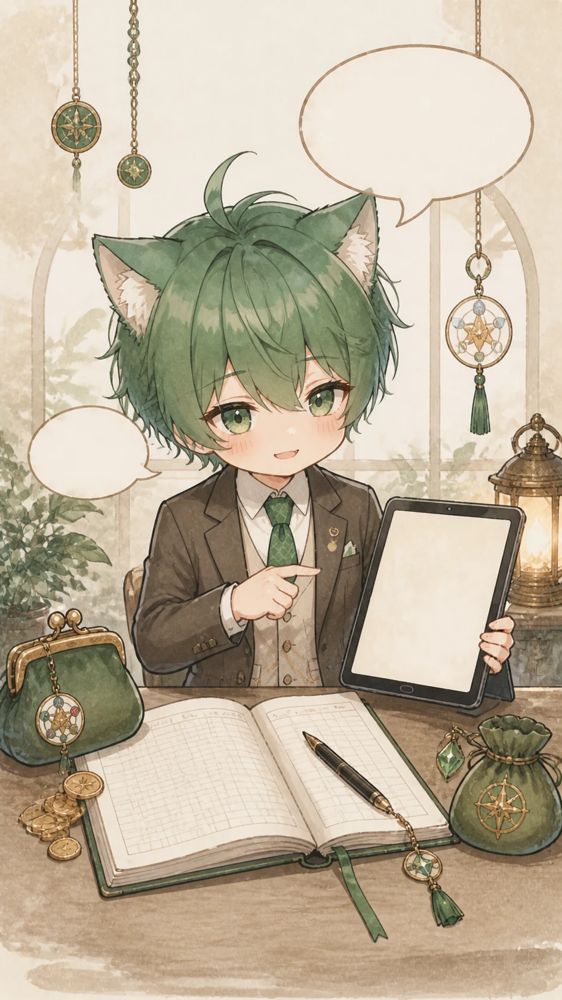

전체 풀이 목록
궁금한 돈 흐름부터 바로 열어봐요
전체 본문은 06 상세에서 열리고, 이 화면에서는 대분류와 중분류의 입구만 정리합니다.
8대분류
41중분류
06상세 연결
재성 + 비겁 흐름을 기준으로 수입, 지출, 저축, 관계 정산을 나눠 봅니다.
권한 확인
전체 결과 접근 상태를 확인하고 있어요
결제 확인이 끝나면 각 항목을 눌러 상세 풀이로 이동합니다.
상세 본문은 서버에서 권한이 확인된 뒤 열리도록 설계했습니다.
목차
대분류에서 중분류로
목록에서는 한 줄 예고만 보고, 상세 해석은 다음 화면에서 확인합니다.

상담 허브
지금 질문을 목차에 연결해요
질문을 남기면 가장 가까운 중분류를 찾아 다음 상세 화면으로 연결합니다.